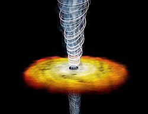

Los cuásares tienen aparentemente el mismo aspecto de una estrella; de ahí su nombre, que proviene de la contracción inglesa quasi-stellar.
En esencia, los cuásares consisten en un núcleo no resuelto y muy luminoso con fuertes líneas de emisión anchas y estrechas. En los cuásares más cercanos se observa una nubosidad difusa, revelando que este tipo de objetos no son más que núcleos de galaxias activas muy lejanas de las que únicamente somos capaces de detectar su núcleo.
Se sabe que la masa de estos objetos es muy elevada y que generalmente presentan una forma estructurada.
